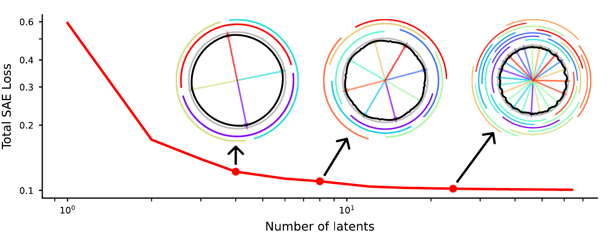

Figure 1
Understanding sparse autoencoder scaling in the presence of feature manifolds
理解特征流形存在时稀疏自编码器的尺度规律
图 1：SAE 在单位圆上增加潜变量时的铺贴机制。灰圆为数据、黑线为重构、彩色箭头和弧段为解码方向及激活范围；仅为合成示例。 来源：Eric \(J\). Michaud、Liv Gorton、Tom McGrath；arXiv:2509.02565v2; CC BY 4.0; https://arxiv.org/abs/2509.02565v2